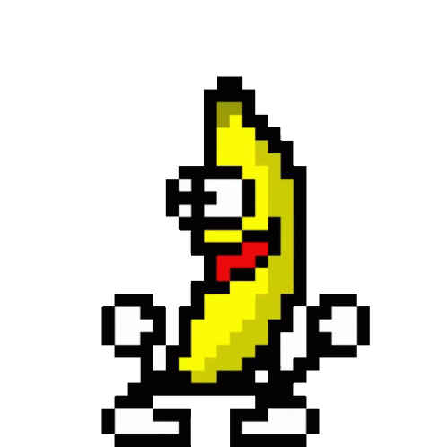

Free emoji & sticker
dancing banana
emoji & sticker
Transparent, free, and ready for Discord, Slack & Telegram
Free emoji & sticker
Transparent, free, and ready for Discord, Slack & Telegram
Yes — the Dancing Banana makes a perfect emoji or sticker. Here's the transparent version of the original 1999 meme, free to drop into Discord, Slack, Telegram, or anywhere you chat.

Quick setup
:banana:, and save. Done. 🍌On Slack, add it as a custom emoji; on Telegram, add it as a sticker. Same file works everywhere.
Make it yours
Add shades, a hat, or a caption, then download your own — perfect for a personal server emoji.
🎨 Make your own dancing banana →The usual questions
Yes — the original, right here, free and transparent. Add it to Discord, Slack, Telegram or anywhere.
Download the transparent version, then Server Settings → Emoji (or Stickers) → Upload → pick the file. Animated emoji need a boosted server.
Yes — upload it as a custom emoji (Slack) or a sticker (Telegram). The same transparent file works.
It's the original Dancing Banana, made by Trym Stene in 1999. Read the story →
{kind=link}